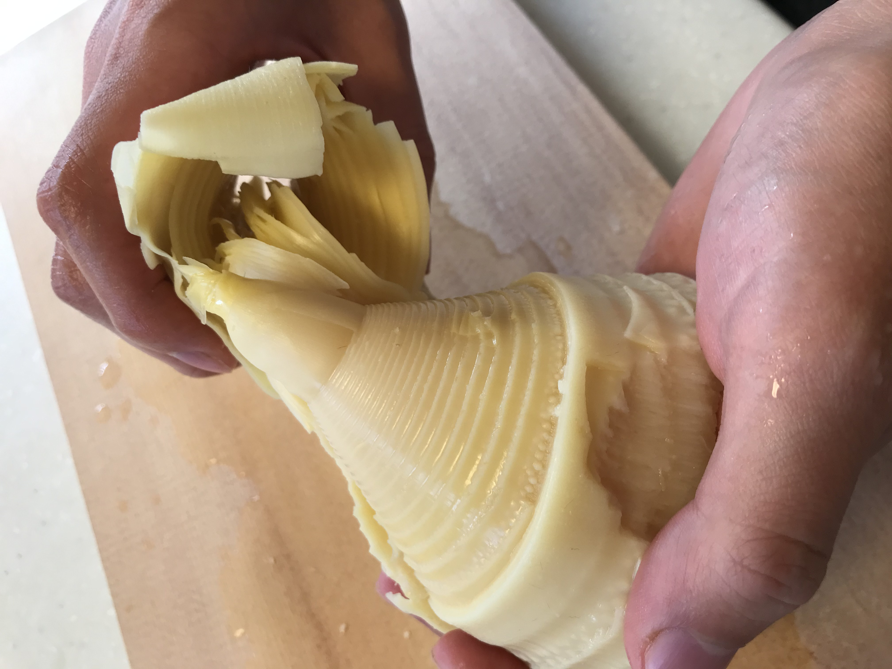

いらっしゃいませ
当サイトにお越しいただきありがとうございます。
INOUE TAKENOKOは
こちらで取り扱っている白子筍は京都の大原野地域で採れたもので、 高級料亭で使用されていたり、よくテレビで取材を受けたりしています。
白子筍を生産する竹林では竹粉や藁、肥料を加えることによって、フカフカでたくさんの養分を含んだ土づくりをしています。また、地中から出てきて日光を浴びる前に収穫した、たけのこのみを取り扱っているため、皮の色が薄く、穂先が黄色くなっています。
このようなたけのこはエグミや繊維がほとんどなく、甘みや香りが非常に強いです。
ぜひ一度、ご賞味ください。

お知らせ
- 2021/10/06
- 「京たけのこカレー」入荷しました。←new!
- 2021/07/31
- 「竹製品」をクラウドファンディングで販売。
- 2021/04/23
- 「白子たけのこ」をクラウドファンディングで販売。
- 2021/03/03
- INOUE TAKENOKO開業。